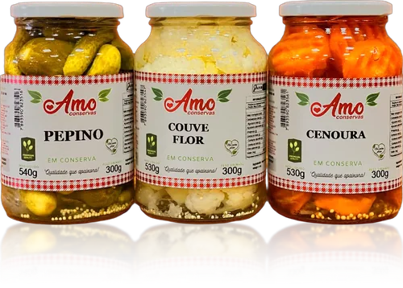
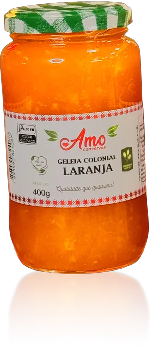
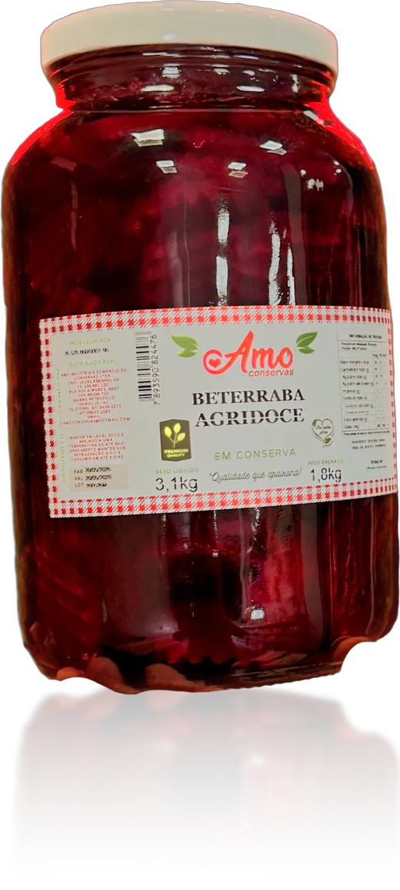
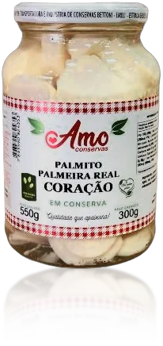
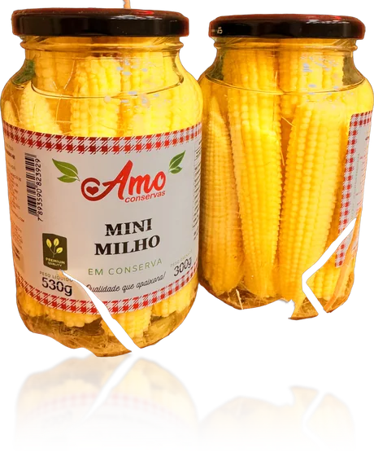
Qualidade que apaixona
Conserva que dá água na boca.
Palmito macio, pepino, beterraba, ovos de codorna, azeitonas e picles com o rótulo Amo, na Rua dos Aimorés.
4,9 no Google, em 186 avaliações
Palmito macio
O coração de pupunha extra macio é campeão de vendas da Amo. A pupunha vem em tolete, coração, rodela, picado e bandas, e a palmeira real em tolete e coração extra macio, em vidros de 300 g.
Para cozinha de restaurante, a pupunha também sai em vidros de 1,8 kg.
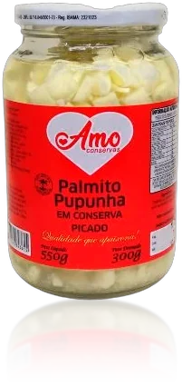
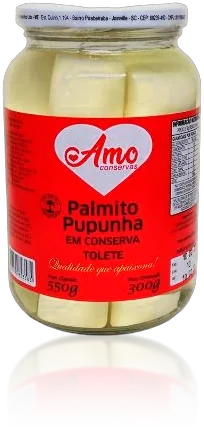
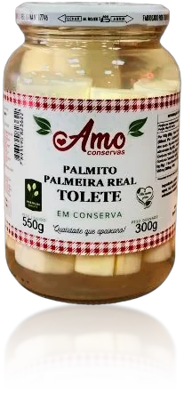
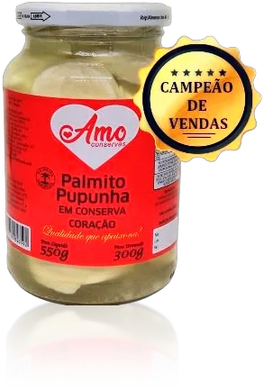
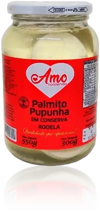
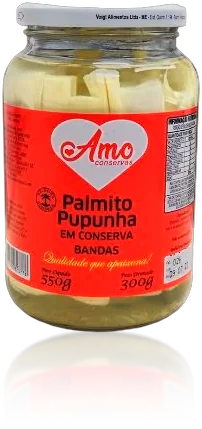
3,1 kg
Vidros grandes, para mercado e restaurante
Palmito, pepino, beterraba agridoce, picles, cenoura, couve-flor, cebola e vagem também vêm em vidros de 1,8 kg. Na foto, a beterraba agridoce: 3,1 kg de peso líquido, 1,8 kg de peso drenado.
Doce também tem: as geleias coloniais
morango, amora, uva, jabuticaba, maracujá, kiwi, abacaxi, laranja, tangerina, frutas vermelhas, abóbora com coco
E as apimentadas: pimenta, abacaxi com pimenta, maracujá com pimenta e xinxim.
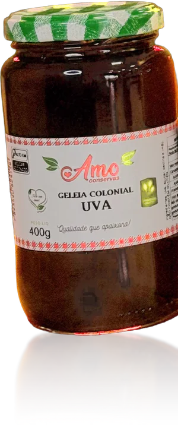
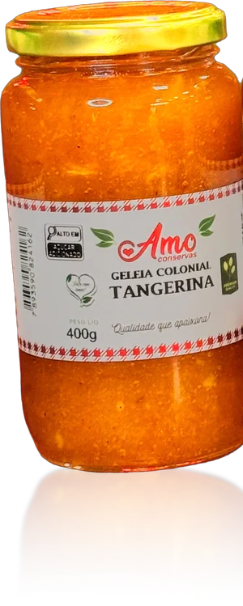
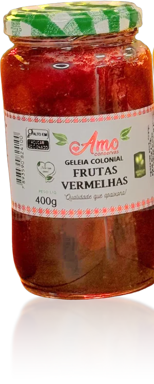
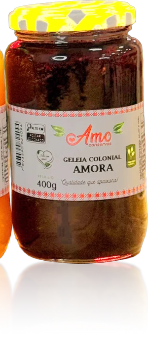
Novidades na loja
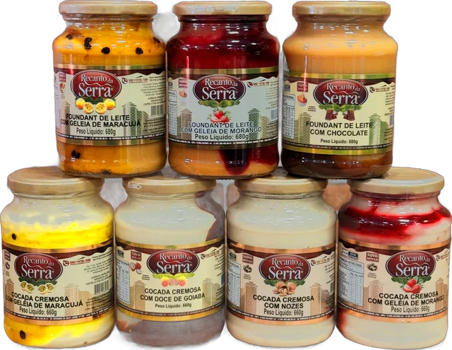
Fondant e cocada cremosa
Da Recanto da Serra, em vidros de 680 g. Fondant de leite com chocolate, com geleia de morango ou de maracujá. Cocada cremosa com nozes, com goiabada, com geleia de morango ou de maracujá.
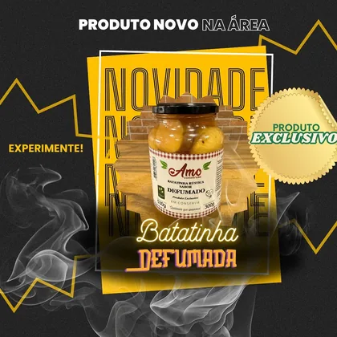
Batatinha rústica sabor defumado
Produto exclusivo, com o rótulo Amo.
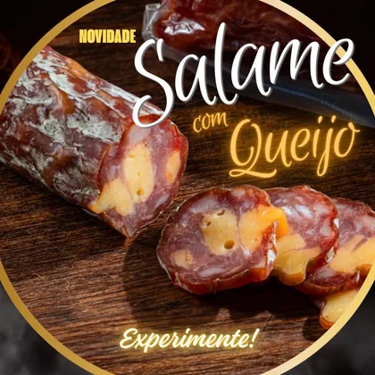
Salame com queijo
Mais uma novidade da loja. Pergunte pelo WhatsApp.
Conserva na tábua
Palmito, pepino, azeitona e ovos de codorna fazem a tábua. Para completar, a loja também tem embutidos, frios e vinhos.
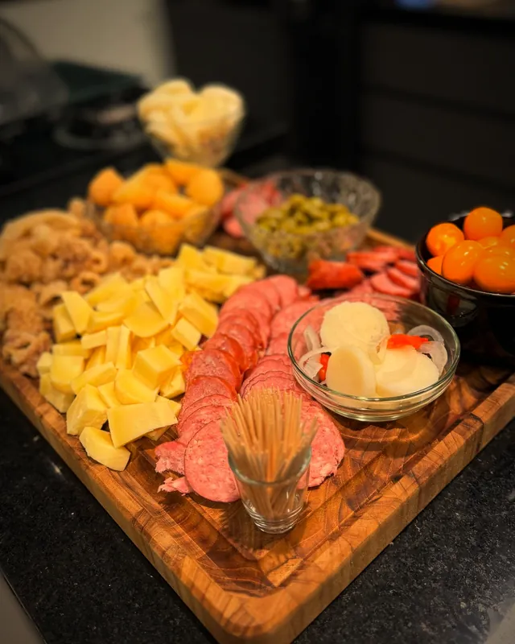
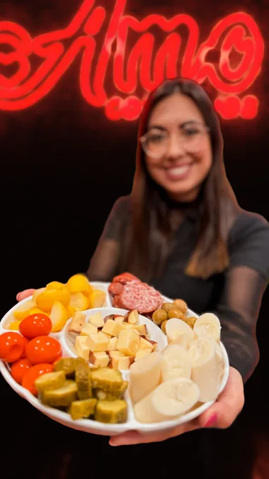
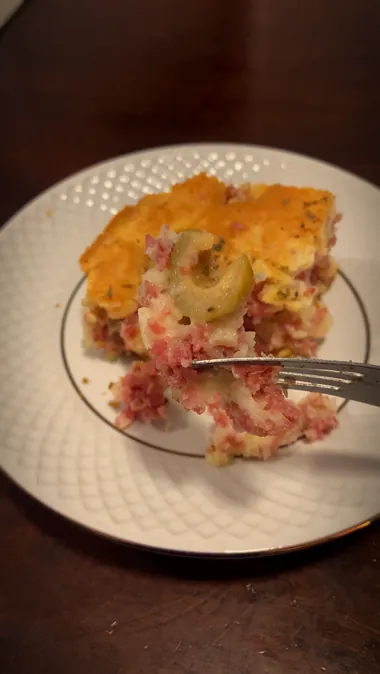
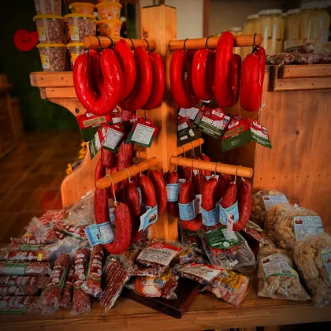
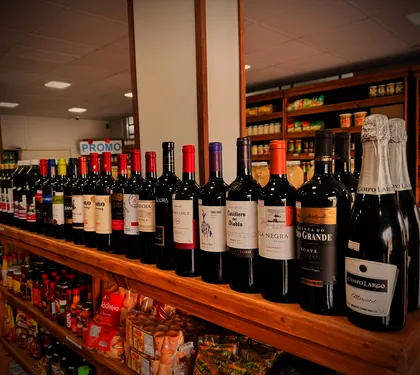
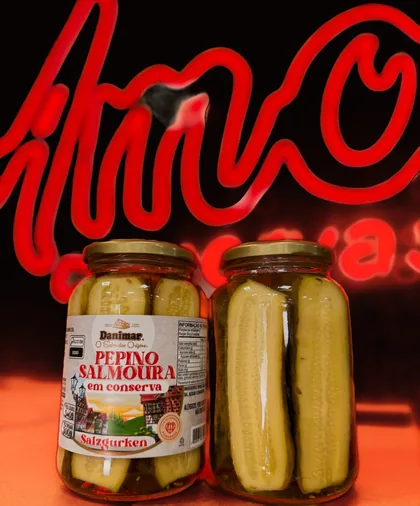
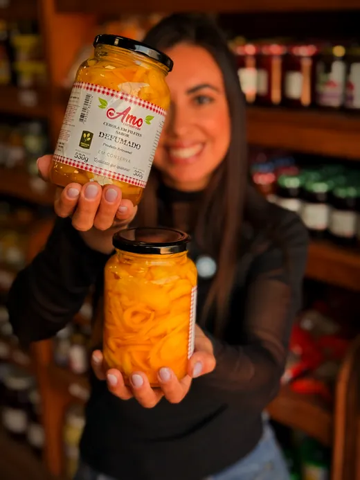
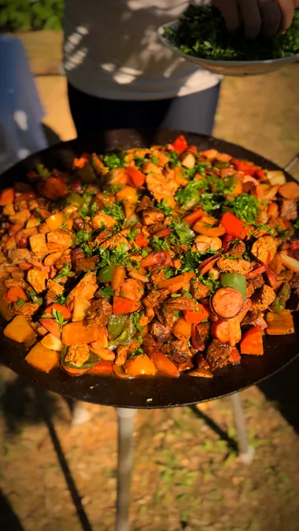
Além da linha Amo, a loja revende outras marcas: salsichas em vinagrete Estrela, pepino em salmoura Danimar, doce de ambrosia Brehm e farinha de mandioca Morretes.
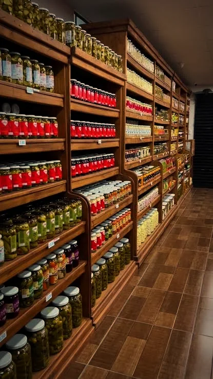
224 itens na tabela, 77 com o rótulo Amo
Uma parede inteira de conserva. A linha Amo, dividida como na tabela de outubro:
- Pepinos
- 6
- Beterrabas
- 1
- Picles
- 2
- Palmitos
- 7
- Ovos de Codorna
- 2
- Azeitonas
- 3
- Variedades
- 15
- Pimentas
- 2
- Geleias
- 15
- Biscoitos Artesanais
- 8
- Frutas em Calda
- 3
- Vidros Grandes
- 13
Seis anos de Amo. Passe na loja, ou peça pelo WhatsApp
A loja comemorou cinco anos com mesa farta, e o sexto com balão dourado embaixo do neon. Hoje são cerca de 13 mil pessoas acompanhando no Instagram.
Endereço
Rua dos Aimorés, 4897
Petrópolis, Joinville – SC
CEP 89208-720
Horário
Seg. a sex.: 9h às 12h e 14h às 18h
Sábado: 9h às 12h
Telefone
Traga seus vidros vazios e ganhe desconto. O vidro volta para a loja e você ajuda o meio ambiente.